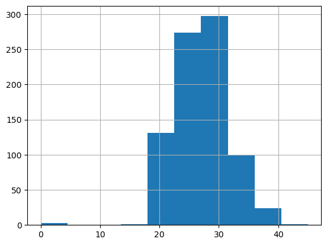
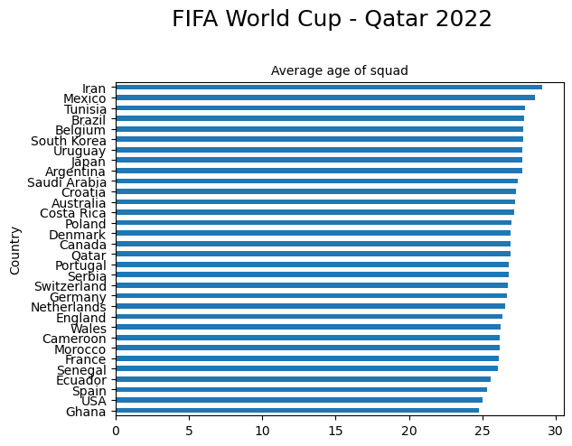
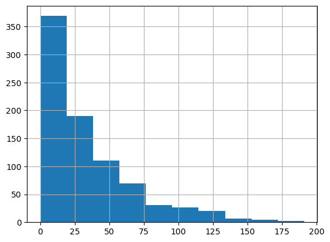
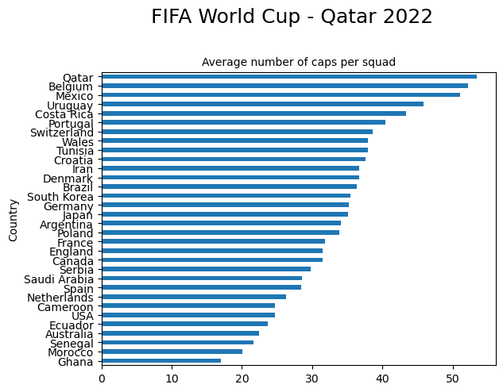
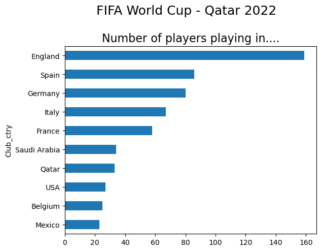
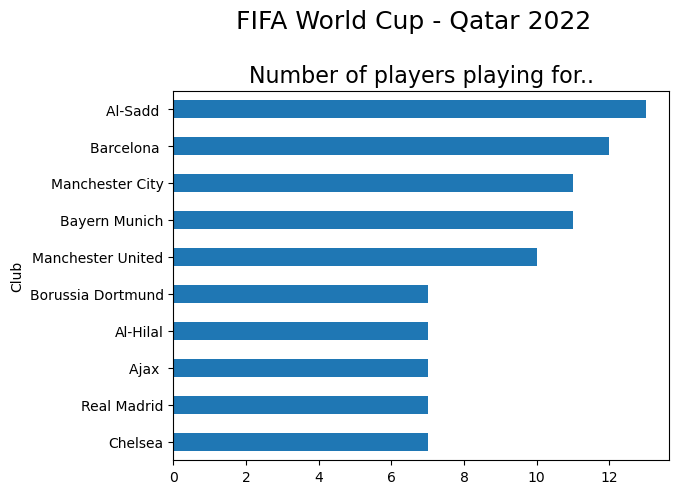
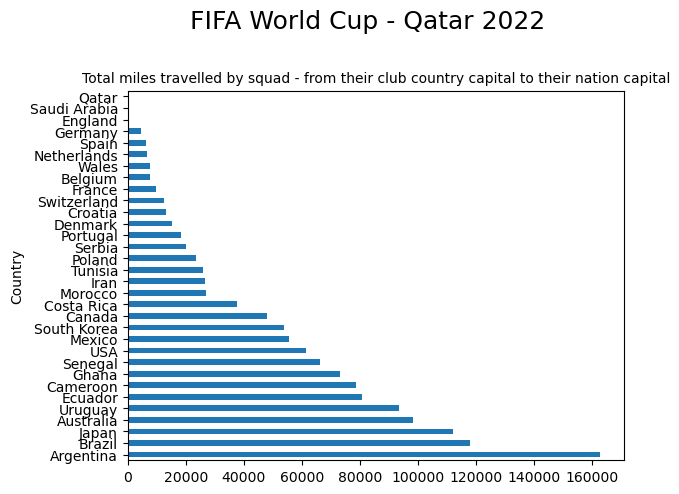

## Import the required packages
import pandas as pd
import numpy as np
from pathlib import Path
import matplotlib as plt
pd.options.display.float_format = '{:.2f}'.formatFIFA World Cup - Qatar 2022
At the time of writing the 2022 World Cup is already underway, with 32 teams battling it out in Qatar for the famous golden globe. I’ve lost touch a bit in recent years with football, and thought it would be interesting to use Python to get back up to speed.
The main aim of this project is to try and uncover some insights about the 32 teams - who has played it safe, and gone for experience, who has been bold and decided to give youth a chance to flourish. I’m also interested in where the players play their football at club level, and hope to quantify their geographical spread.
Data source
The data was sourced from Sporting News website.
Exploratory Data Analysis
Let’s dive in!

# Load in our data
world_cup = pd.read_csv('Data/World_Cup_2022.csv')We can automate some of the exploratory data analysis by writing a function:
def initial_eda(df):
if isinstance(df, pd.DataFrame):
total_na = df.isna().sum().sum()
print("Dimensions : %d rows, %d columns" % (df.shape[0], df.shape[1]))
print("Total NA Values : %d " % (total_na))
print("%38s %10s %10s %10s" % ("Column Name", "Data Type", "#Distinct", "NA Values"))
col_name = df.columns
dtyp = df.dtypes
uniq = df.nunique()
na_val = df.isna().sum()
for i in range(len(df.columns)):
print("%38s %10s %10s %10s" % (col_name[i], dtyp[i], uniq[i], na_val[i]))
else:
print("Expect a DataFrame but got a %15s" % (type(df))) initial_eda(world_cup)Dimensions : 830 rows, 11 columns
Total NA Values : 0
Column Name Data Type #Distinct NA Values
Name object 830 0
Position object 4 0
Age float64 29 0
Country object 32 0
Ctry_cap object 32 0
Caps int64 132 0
Group object 8 0
Club object 446 0
Club_ctry object 43 0
Club_ctry_cap object 43 0
Home_Away object 2 0Looks like there is no missing data within the dataset. However, there are 8 groups of 4, so 32 teams competing and the maximum permitted squad size is 26, which would be 832 players. We only have 830 observations. Let’s investigate this by grouping the squad numbers by country:
world_cup.groupby("Country")["Name"].count().sort_values(ascending=False)Country
Argentina 26
Australia 26
Uruguay 26
USA 26
Tunisia 26
Switzerland 26
Spain 26
South Korea 26
Serbia 26
Senegal 26
Saudi Arabia 26
Qatar 26
Portugal 26
Poland 26
Netherlands 26
Morocco 26
Mexico 26
Japan 26
Ghana 26
Germany 26
England 26
Ecuador 26
Denmark 26
Croatia 26
Costa Rica 26
Canada 26
Cameroon 26
Brazil 26
Belgium 26
Wales 26
Iran 25
France 25
Name: Name, dtype: int64Iran and France only have 25 players in their squad. On follow up this was confirmed to be correct, so we haven’t lost any players! Let’s move on and take a closer look at our data by looking at the first few rows:
# View the first 5 rows
world_cup.head()| Name | Position | Age | Country | Ctry_cap | Caps | Group | Club | Club_ctry | Club_ctry_cap | Home_Away | |
|---|---|---|---|---|---|---|---|---|---|---|---|
| 0 | Saad Al-Sheeb | GK | 32.00 | Qatar | Doha | 80 | A | Al-Sadd | Qatar | Doha | Home |
| 1 | Meshaal Barsham | GK | 24.00 | Qatar | Doha | 15 | A | Al-Sadd | Qatar | Doha | Home |
| 2 | Yousuf Hassan | GK | 26.00 | Qatar | Doha | 9 | A | Al-Gharafa | Qatar | Doha | Home |
| 3 | Pedro Miguel | DEF | 32.00 | Qatar | Doha | 78 | A | Al-Sadd | Qatar | Doha | Home |
| 4 | Musaab Khidir | DEF | 29.00 | Qatar | Doha | 29 | A | Al-Sadd | Qatar | Doha | Home |
….and the last few rows:
# View the last 5 rows
world_cup.tail()| Name | Position | Age | Country | Ctry_cap | Caps | Group | Club | Club_ctry | Club_ctry_cap | Home_Away | |
|---|---|---|---|---|---|---|---|---|---|---|---|
| 825 | Kamaldeen Sulemana | MID | 20.00 | Ghana | Accra | 11 | H | Stade Rennes | France | Paris | Away |
| 826 | Antoine Semenyo | FWD | 22.00 | Ghana | Accra | 1 | H | Bristol City | England | London | Away |
| 827 | Andre Ayew | FWD | 32.00 | Ghana | Accra | 107 | H | Al Sadd | Qatar | Doha | Away |
| 828 | Jordan Ayew | FWD | 31.00 | Ghana | Accra | 82 | H | Crystal Palace | England | London | Away |
| 829 | Inaki Williams | FWD | 28.00 | Ghana | Accra | 1 | H | Athletic Club | Spain | Madrid | Away |
OK, so we can see that we have some basic information about each player:
- Name
- Position (GK = Goalkeeper DEF = Defender MID = Midfielder FWD = Forward)
- Age
- Country they represent
- Ctry_cap - capital of country they represent
- Caps (Number of matches played for their country)
- Group (32 teams divided into 8 groups A-H of 4)
- Club (the team that pays the player's wages!)
- Club_ctry (the location of the player's domestic team)
- Club_ctry_cap (capital of their club country)
- Home_Away - where they play their club footballNumeric features
import numpy as np
world_cup.describe(include=(np.number))| Age | Caps | |
|---|---|---|
| count | 830.00 | 830.00 |
| mean | 26.80 | 33.87 |
| std | 4.59 | 33.81 |
| min | 0.00 | 0.00 |
| 25% | 24.00 | 8.00 |
| 50% | 27.00 | 23.00 |
| 75% | 30.00 | 47.00 |
| max | 45.00 | 191.00 |
You can’t win anything with kids
It turned out of course that Alan was wrong - Manchester United went on to win the English Premier league that season. There is no master recipe for success it seems at these tournaments. Some managers like to lean on the old guard, some like to throw the gauntlet down and give the kids a chance. Let’s take a look at the age profile of the players using a histogram:
world_cup ['Age'].hist();
Something doesn’t look right here, some ages between 0 and 5! Let’s look into this. We can use .loc to access a group of rows and columns by name or .iloc to access by index:
world_cup.loc[world_cup['Age'] <5 ]| Name | Position | Age | Country | Ctry_cap | Caps | Group | Club | Club_ctry | Club_ctry_cap | Home_Away | |
|---|---|---|---|---|---|---|---|---|---|---|---|
| 34 | Diego Palacios | DEF | 2.00 | Ecuador | Quito | 11 | A | LAFC | USA | Washington, DC | Away |
| 520 | Ahmed Reda Tagnaouti | GK | 3.00 | Morocco | Rabat | 3 | F | Wydad Casablanca | Morocco | Rabat | Home |
| 642 | Fabian Rieder | MID | 0.00 | Switzerland | Berne | 0 | G | Young Boys | Switzerland | Berne | Home |
On follow up, Diego Palacios Fabian Redier is 23, Ahmed Reda Tagnaouti is 26, and Fabian Rieder is 20 years old. We can correct these errors using .iat. The values we wish to update are located at rows 34, 520 and 642 of column 2 - watch out, indexing starts at 0 in Python!
# Update Diego Palacios age
world_cup.iat[34,2]=23
# Update Ahmed Reda Tagnaouti age
world_cup.iat[520,2]=26
# Update Fabian Rieder age
world_cup.iat[642,2]=20Let’s check that’s worked:
world_cup.loc[34:34]| Name | Position | Age | Country | Ctry_cap | Caps | Group | Club | Club_ctry | Club_ctry_cap | Home_Away | |
|---|---|---|---|---|---|---|---|---|---|---|---|
| 34 | Diego Palacios | DEF | 23.00 | Ecuador | Quito | 11 | A | LAFC | USA | Washington, DC | Away |
world_cup.loc[520:520]| Name | Position | Age | Country | Ctry_cap | Caps | Group | Club | Club_ctry | Club_ctry_cap | Home_Away | |
|---|---|---|---|---|---|---|---|---|---|---|---|
| 520 | Ahmed Reda Tagnaouti | GK | 26.00 | Morocco | Rabat | 3 | F | Wydad Casablanca | Morocco | Rabat | Home |
world_cup.loc[642:642]| Name | Position | Age | Country | Ctry_cap | Caps | Group | Club | Club_ctry | Club_ctry_cap | Home_Away | |
|---|---|---|---|---|---|---|---|---|---|---|---|
| 642 | Fabian Rieder | MID | 20.00 | Switzerland | Berne | 0 | G | Young Boys | Switzerland | Berne | Home |
Great, the ages have been successfully updated. Let’s now take a look at the age profile of each of the 32 squads:
import matplotlib.pyplot as plt
title_string = "FIFA World Cup - Qatar 2022"
subtitle_string = "Average age of squad"
x = world_cup.groupby('Country')['Age'].mean().sort_values()
plt.figure()
x.plot(kind='barh')
plt.suptitle(title_string, y=1.05, fontsize=18)
plt.title(subtitle_string, fontsize=10)Text(0.5, 1.0, 'Average age of squad')
ave_age = world_cup.groupby("Country")["Age"].mean()
ave_age.sort_values(ascending=False)Country
Iran 29.08
Mexico 28.58
Tunisia 27.92
Brazil 27.86
Belgium 27.77
South Korea 27.77
Uruguay 27.73
Japan 27.69
Argentina 27.69
Saudi Arabia 27.38
Croatia 27.31
Australia 27.23
Costa Rica 27.15
Poland 27.00
Canada 26.92
Denmark 26.92
Qatar 26.92
Portugal 26.77
Serbia 26.77
Switzerland 26.73
Germany 26.69
Netherlands 26.58
England 26.35
Wales 26.23
Morocco 26.19
Cameroon 26.19
France 26.12
Senegal 26.04
Ecuador 25.54
Spain 25.31
USA 25.00
Ghana 24.73
Name: Age, dtype: float64So Ghana and Ecaudor have the youngest squads (average age 24.73) whilst Iran has the oldest, with an average age of 29.08.
Out with the old

The players below will be looking at the board and hoping for a large number. Players are looking after themselves more and more, extending their playing careers, but realistically, for the players below, this is possibly their last opportunity to appear in a World Cup. So make sure to see catch them while you can!
mature = world_cup[world_cup['Age'] > 33]
mature_sorted = mature.sort_values(by="Age",ascending = False)
mature_sorted.head(10)| Name | Position | Age | Country | Ctry_cap | Caps | Group | Club | Club_ctry | Club_ctry_cap | Home_Away | |
|---|---|---|---|---|---|---|---|---|---|---|---|
| 143 | Ramin Rezaeian | DEF | 45.00 | Iran | Tehran | 2 | B | Sepahan | Iran | Tehran | Home |
| 261 | Alfredo Talavera | GK | 40.00 | Mexico | Mexico City | 40 | C | FC Juarez | Mexico | Mexico City | Home |
| 440 | Eiji Kawashima | GK | 39.00 | Japan | Tokyo | 95 | E | Strasbourg | France | Paris | Away |
| 781 | Pepe | DEF | 39.00 | Portugal | Lisbon | 128 | H | Porto | Portugal | Lisbon | Home |
| 608 | Atiba Hutchinson | MID | 39.00 | Canada | Ottawa | 98 | F | Besiktas | Turkey | Istanbul | Away |
| 682 | Dani Alves | DEF | 39.00 | Brazil | Brasilia | 125 | G | Pumas UNAM | Mexico | Mexico City | Away |
| 679 | Thiago Silva | DEF | 38.00 | Brazil | Brasilia | 108 | G | Chelsea | England | London | Away |
| 78 | Remko Pasveer | GK | 38.00 | Netherlands | Amsterdam | 2 | A | Ajax | Netherlands | Amsterdam | Home |
| 340 | Aymen Mathlouthi | GK | 38.00 | Tunisia | Tunis | 73 | D | Etoile du Sahel | Tunisia | Tunis | Home |
| 365 | Steve Mandanda | GK | 37.00 | France | Paris | 34 | D | Rennes | France | Paris | Home |
In with the new
new = world_cup[world_cup['Age'] < 20]
new_sorted = new.sort_values(by="Age",ascending = True)
new_sorted.head(10)| Name | Position | Age | Country | Ctry_cap | Caps | Group | Club | Club_ctry | Club_ctry_cap | Home_Away | |
|---|---|---|---|---|---|---|---|---|---|---|---|
| 435 | Youssoufa Moukoko | FWD | 17.00 | Germany | Berlin | 1 | E | Borussia Dortmund | Germany | Berlin | Home |
| 820 | Fatawu Issahaku | MID | 18.00 | Ghana | Accra | 11 | H | Sporting | Portugal | Lisbon | Away |
| 577 | Zeno Debast | DEF | 18.00 | Belgium | Brussels | 3 | F | Anderlecht | Belgium | Brussels | Home |
| 531 | Bilal El Khannouss | MID | 18.00 | Morocco | Rabat | 0 | F | Racing Genk | Belgium | Brussels | Away |
| 505 | Jewison Bennette | MID | 18.00 | Costa Rica | San Jose | 7 | E | Sunderland | England | London | Away |
| 412 | Garang Kuol | FWD | 18.00 | Australia | Canberra | 1 | D | Central Coast Mariners | Australia | Canberra | Home |
| 478 | Gavi | MID | 18.00 | Spain | Madrid | 13 | E | Barcelona | Spain | Madrid | Home |
| 784 | Antonio Silva | DEF | 19.00 | Portugal | Lisbon | 0 | H | Benfica | Portugal | Lisbon | Home |
| 648 | Simon Ngapandouetnbu | GK | 19.00 | Cameroon | Yaounde | 0 | G | Marseille | France | Paris | Away |
| 504 | Brandon Aguilera | MID | 19.00 | Costa Rica | San Jose | 4 | E | Guanacasteca | Costa Rica | San Jose | Home |
So it looks like the youngest player at the tournament is Youssoufa Moukoko of Germany at just 17.
Are you experienced?
Although in some sports physical caps may not now always be given (whether at all or for each appearance) the term cap for an international or other appearance has been retained as an indicator of the number of occasions on which a sportsperson has represented a team in a particular sport. Thus, a “cap” is awarded for each game played and so a player who has played x games for the team is said to have been capped x times or have won x caps.
Let’s first look at the distribution of the number of caps received going into this tournament, using a histogram:
world_cup ['Caps'].hist();
As we can see the majority of players are relatively inexperienced, with less than around 40 appearances, although there are some very experienced players, with over 150 caps. Let’s have a look at who they are:
world_cup.loc[world_cup['Caps'] > 150]| Name | Position | Age | Country | Ctry_cap | Caps | Group | Club | Club_ctry | Club_ctry_cap | Home_Away | |
|---|---|---|---|---|---|---|---|---|---|---|---|
| 20 | Hassan Al-Haydos | MID | 31.00 | Qatar | Doha | 160 | A | Al-Sadd | Qatar | Doha | Home |
| 232 | Lionel Messi | FWD | 35.00 | Argentina | Buenos Aires | 165 | C | PSG | France | Paris | Away |
| 272 | Andres Guardado | MID | 36.00 | Mexico | Mexico City | 180 | C | Real Betis | Spain | Madrid | Away |
| 506 | Celso Borges | MID | 34.00 | Costa Rica | San Jose | 154 | E | Alajuelense | Costa Rica | San Jose | Home |
| 558 | Luka Modric | MID | 37.00 | Croatia | Zagreb | 155 | F | Real Madrid | Spain | Madrid | Away |
| 733 | Diego Godin | DEF | 36.00 | Uruguay | Montevideo | 159 | G | Velez Sarsfield | Argentina | Buenos Aires | Away |
| 798 | Cristiano Ronaldo | FWD | 37.00 | Portugal | Lisbon | 191 | H | Manchester United | England | London | Away |
Cristiano Ronaldo is the most capped player at the tournament with 191. The 200 mark is in sight, although at 37 maybe it’s time to make way for some new blood?
Baptism of fire?
The minimum number of caps shown is 0 which means there are players at this tournament who have yet to play for their country - the stage has been set! Let’s find out who they are:
world_cup.loc[world_cup['Caps'] == 0]| Name | Position | Age | Country | Ctry_cap | Caps | Group | Club | Club_ctry | Club_ctry_cap | Home_Away | |
|---|---|---|---|---|---|---|---|---|---|---|---|
| 12 | Jassim Jabir | MID | 20.00 | Qatar | Doha | 0 | A | Al-Arabi | Qatar | Doha | Home |
| 33 | William Pacho | DEF | 21.00 | Ecuador | Quito | 0 | A | Royal Antwerp | Belgium | Brussels | Away |
| 50 | Kevin Rodriguez | FWD | 22.00 | Ecuador | Quito | 0 | A | Imbabura SC | Ecuador | Quito | Home |
| 61 | Moussa Ndiaye | DEF | 20.00 | Senegal | Dakar | 0 | A | Anderlecht | Belgium | Brussels | Away |
| 70 | Pathe Ciss | MID | 28.00 | Senegal | Dakar | 0 | A | Rayo Vallecano | Spain | Madrid | Away |
| 79 | Andries Noppert | GK | 28.00 | Netherlands | Amsterdam | 0 | A | Heerenveen | Netherlands | Amsterdam | Home |
| 83 | Jeremie Frimpong | DEF | 21.00 | Netherlands | Amsterdam | 0 | A | Bayer Leverkusen | Germany | Berlin | Away |
| 92 | Xavi Simons | MID | 19.00 | Netherlands | Amsterdam | 0 | A | PSV Eindhoven | Netherlands | Amsterdam | Home |
| 234 | Nawaf Al-Aqidi | GK | 22.00 | Saudi Arabia | Riyadh | 0 | C | Al-Nassr FC | Saudi Arabia | Riyadh | Home |
| 235 | Mohamed Al-Yami | GK | 25.00 | Saudi Arabia | Riyadh | 0 | C | Al-Ahli Saudi FC | Saudi Arabia | Riyadh | Home |
| 366 | Axel Disasi | DEF | 24.00 | France | Paris | 0 | D | Monaco | France | Paris | Home |
| 474 | Alejandro Balde | DEF | 19.00 | Spain | Madrid | 0 | E | Barcelona | Spain | Madrid | Home |
| 531 | Bilal El Khannouss | MID | 18.00 | Morocco | Rabat | 0 | F | Racing Genk | Belgium | Brussels | Away |
| 597 | James Pantemis | GK | 25.00 | Canada | Ottawa | 0 | F | CF Montreal | Canada | Ottawa | Home |
| 624 | Philipp Kohn | GK | 24.00 | Switzerland | Berne | 0 | G | RB Salzburg | Austria | Vienna | Away |
| 642 | Fabian Rieder | MID | 20.00 | Switzerland | Berne | 0 | G | Young Boys | Switzerland | Berne | Home |
| 648 | Simon Ngapandouetnbu | GK | 19.00 | Cameroon | Yaounde | 0 | G | Marseille | France | Paris | Away |
| 779 | Jose Sa | GK | 29.00 | Portugal | Lisbon | 0 | H | Wolves | England | London | Away |
| 784 | Antonio Silva | DEF | 19.00 | Portugal | Lisbon | 0 | H | Benfica | Portugal | Lisbon | Home |
| 802 | Goncalo Ramos | FWD | 21.00 | Portugal | Lisbon | 0 | H | Benfica | Portugal | Lisbon | Home |
| 806 | Ibrahim Danlad | GK | 19.00 | Ghana | Accra | 0 | H | Asante Kotoko | Ghana | Accra | Home |
| 823 | Salis Abdul Samed | MID | 22.00 | Ghana | Accra | 0 | H | Lens | France | Paris | Away |
| 824 | Kamal Sowah | MID | 22.00 | Ghana | Accra | 0 | H | Club Brugge | Belgium | Brussels | Away |
As expected, these players are generally quite young (although Portugal’s Jose Sa is 29 - better late than never) or goalkeepers, where the first choice tends to be difficult to oust! Keep an eye out for these names - they might be the stars of the future.
Let’s take a look at the average number of caps for each squad:
import matplotlib.pyplot as plt
title_string = "FIFA World Cup - Qatar 2022"
subtitle_string = "Average number of caps per squad"
x = world_cup.groupby('Country')['Caps'].mean().sort_values()
plt.figure()
x.plot(kind='barh')
plt.suptitle(title_string, y=1.05, fontsize=18)
plt.title(subtitle_string, fontsize=10)Text(0.5, 1.0, 'Average number of caps per squad')
caps = world_cup.groupby("Country")["Caps"].mean()
caps.sort_values(ascending=False)Country
Qatar 53.46
Belgium 52.19
Mexico 51.12
Uruguay 45.85
Costa Rica 43.42
Portugal 40.42
Switzerland 38.58
Wales 37.96
Tunisia 37.88
Croatia 37.65
Iran 36.72
Denmark 36.65
Brazil 36.31
South Korea 35.46
Germany 35.19
Japan 35.15
Argentina 34.12
Poland 33.88
France 31.80
England 31.54
Canada 31.46
Serbia 29.77
Saudi Arabia 28.50
Spain 28.42
Netherlands 26.23
Cameroon 24.73
USA 24.69
Ecuador 23.73
Australia 22.42
Senegal 21.62
Morocco 20.04
Ghana 17.00
Name: Caps, dtype: float64The host nation Quatar have the most experienced squad with an average of 53.46 international apperances per player. The least experienced squad is Ghana, with an average of 17.
To caveat this, it is worth noting that qualification for the World Cup is segregated by region, and there can be a wide disparity between the number of qualifying matches played. This can result in some nations playing a large number of matches, without necessarily playing in a major tournament, which is perhaps a better indicator of experience.
Categorical features
Here’s how we get a quick summary of all the non-numeric columns in the dataset:
world_cup.describe(include=[object])| Name | Position | Country | Ctry_cap | Group | Club | Club_ctry | Club_ctry_cap | Home_Away | |
|---|---|---|---|---|---|---|---|---|---|
| count | 830 | 830 | 830 | 830 | 830 | 830 | 830 | 830 | 830 |
| unique | 830 | 4 | 32 | 32 | 8 | 446 | 43 | 43 | 2 |
| top | Saad Al-Sheeb | DEF | Qatar | Doha | G | Al-Sadd | England | London | Away |
| freq | 1 | 274 | 26 | 26 | 130 | 13 | 159 | 159 | 551 |
cols = ['Position', 'Group', 'Home_Away']
world_cup[cols] = world_cup[cols].astype('category')world_cup[['Name','Country','Ctry_cap','Club','Club_ctry','Club_ctry_cap']] = world_cup[['Name','Country','Ctry_cap','Club','Club_ctry','Club_ctry_cap']].astype(str)Club v Country
First of all let’s look at where these 830 players play their club football:
import matplotlib.pyplot as plt
title_string = "FIFA World Cup - Qatar 2022"
subtitle_string = "Number of players playing in...."
x = world_cup.groupby('Club_ctry')['Club'].count().sort_values(ascending=True).tail(10)
plt.figure()
x.plot(kind='barh')
plt.suptitle(title_string, y=1.05, fontsize=18)
plt.title(subtitle_string, fontsize=16)Text(0.5, 1.0, 'Number of players playing in....')
world_cup.groupby("Club_ctry")["Club"].count().sort_values(ascending=False).head(10)Club_ctry
England 159
Spain 86
Germany 80
Italy 67
France 58
Saudi Arabia 34
Qatar 33
USA 27
Belgium 25
Mexico 23
Name: Club, dtype: int64So out of 830 players represented at the World Cup, 159 play their football in England. Let’s take a look at the top 10 clubs with the most players playing at this tournament:
title_string = "FIFA World Cup - Qatar 2022"
subtitle_string = "Number of players playing for.."
x = world_cup.groupby("Club")["Club_ctry"].count().sort_values(ascending=True).tail(10)
plt.figure()
x.plot(kind='barh')
plt.suptitle(title_string, y=1.05, fontsize=18)
plt.title(subtitle_string, fontsize=16)Text(0.5, 1.0, 'Number of players playing for..')
Al-Sadd, wo play in the Qatar Stars league have 13 players (all playing for Qatar) at the tournament, closely followed by Barcelona with 12, Munich and Manchester City, with 11 and Manchester United having 10. Saudi Arabia’s squad all play within Saudi Arabia, 7 of them for Al_Hilal.
Scotland
Sadly, my country didn’t make it, but there are some players who play domestically in Scotland who will be in Qatar representing their country. Let’s have a look and see who they are:
scotland = world_cup[world_cup['Club_ctry'] == 'Scotland']
scotland| Name | Position | Age | Country | Ctry_cap | Caps | Group | Club | Club_ctry | Club_ctry_cap | Home_Away | |
|---|---|---|---|---|---|---|---|---|---|---|---|
| 159 | Cameron Carter-Vickers | DEF | 24.00 | USA | Washington, DC | 10 | B | Celtic | Scotland | Edinburgh | Away |
| 200 | Dylan Levitt | MID | 21.00 | Wales | Cardiff | 13 | B | Dundee United | Scotland | Edinburgh | Away |
| 392 | Aziz Behich | DEF | 31.00 | Australia | Canberra | 53 | D | Dundee United | Scotland | Edinburgh | Away |
| 394 | Nathaniel Atkinson | DEF | 23.00 | Australia | Canberra | 5 | D | Hearts | Scotland | Edinburgh | Away |
| 397 | Kye Rowles | DEF | 24.00 | Australia | Canberra | 3 | D | Hearts | Scotland | Edinburgh | Away |
| 400 | Aaron Mooy | MID | 32.00 | Australia | Canberra | 53 | D | Celtic | Scotland | Edinburgh | Away |
| 403 | Keanu Baccus | MID | 29.00 | Australia | Canberra | 53 | D | St Mirren | Scotland | Edinburgh | Away |
| 404 | Cameron Devlin | MID | 24.00 | Australia | Canberra | 1 | D | Hearts | Scotland | Edinburgh | Away |
| 464 | Daizen Maeda | FWD | 25.00 | Japan | Tokyo | 8 | E | Celtic | Scotland | Edinburgh | Away |
| 548 | Borna Barisic | DEF | 29.00 | Croatia | Zagreb | 28 | F | Rangers | Scotland | Edinburgh | Away |
| 554 | Josip Juranovic | DEF | 27.00 | Croatia | Zagreb | 21 | F | Celtic | Scotland | Edinburgh | Away |
| 614 | David Wotherspoon | MID | 32.00 | Canada | Ottawa | 10 | F | St. Johnstone | Scotland | Edinburgh | Away |
Interestingly, out of the 12 players who play their club football in Scotland, 6 are Australian. The shared language is probably a contributory factor, certainly not the search for warmer weather.
Poland

Having recently relocated here, at least I now have a team to follow! Let’s have a look at the players who play their club football in Poland:
poland_club = world_cup[world_cup['Club_ctry'] == 'Poland']
poland_club| Name | Position | Age | Country | Ctry_cap | Caps | Group | Club | Club_ctry | Club_ctry_cap | Home_Away | |
|---|---|---|---|---|---|---|---|---|---|---|---|
| 295 | Artur Jedrzejczyk | DEF | 34.00 | Poland | Warsaw | 40 | C | Legia Warsaw | Poland | Warsaw | Home |
| 297 | Michal Skoras | MID | 22.00 | Poland | Warsaw | 1 | C | Lech Poznan | Poland | Warsaw | Home |
| 301 | Kamil Grosicki | MID | 34.00 | Poland | Warsaw | 87 | C | Pogon Szczecin | Poland | Warsaw | Home |
| 706 | Filip Mladenovic | DEF | 31.00 | Serbia | Belgrade | 20 | G | Legia Warsaw | Poland | Warsaw | Away |
Only 4 players, 3 of which are Polish. The lone soldier is Filip Mladenovic of Serbia who plays his club football with Legia Warsaw. Let’s have a look at the Poland squad in general:
poland = world_cup[world_cup['Country'] == 'Poland']
poland| Name | Position | Age | Country | Ctry_cap | Caps | Group | Club | Club_ctry | Club_ctry_cap | Home_Away | |
|---|---|---|---|---|---|---|---|---|---|---|---|
| 285 | Wojciech Szczesny | GK | 32.00 | Poland | Warsaw | 66 | C | Juventus | Italy | Rome | Away |
| 286 | Lukasz Skorupski | GK | 31.00 | Poland | Warsaw | 8 | C | Bologna | Italy | Rome | Away |
| 287 | Kamil Grabara | GK | 23.00 | Poland | Warsaw | 1 | C | Copenhagen | Denmark | Copenhagen | Away |
| 288 | Jan Bednarek | DEF | 26.00 | Poland | Warsaw | 45 | C | Aston Villa | England | London | Away |
| 289 | Kamil Glik | DEF | 34.00 | Poland | Warsaw | 99 | C | Benevento | Italy | Rome | Away |
| 290 | Matty Cash | DEF | 25.00 | Poland | Warsaw | 7 | C | Aston Villa | England | London | Away |
| 291 | Jakub Kiwior | DEF | 22.00 | Poland | Warsaw | 3 | C | Spezia | Italy | Rome | Away |
| 292 | Robert Gumny | DEF | 24.00 | Poland | Warsaw | 5 | C | FC Augsburg | Germany | Berlin | Away |
| 293 | Bartosz Bereszynski | DEF | 30.00 | Poland | Warsaw | 46 | C | Sampdoria | Italy | Rome | Away |
| 294 | Mateusz Wieteska | DEF | 25.00 | Poland | Warsaw | 2 | C | Clermont | France | Paris | Away |
| 295 | Artur Jedrzejczyk | DEF | 34.00 | Poland | Warsaw | 40 | C | Legia Warsaw | Poland | Warsaw | Home |
| 296 | Nicola Zalewski | MID | 20.00 | Poland | Warsaw | 7 | C | Roma | Italy | Rome | Away |
| 297 | Michal Skoras | MID | 22.00 | Poland | Warsaw | 1 | C | Lech Poznan | Poland | Warsaw | Home |
| 298 | Grzegorz Krychowiak | MID | 32.00 | Poland | Warsaw | 94 | C | Al Shabab | Saudi Arabia | Riyadh | Away |
| 299 | Piotr Zielinski | MID | 28.00 | Poland | Warsaw | 74 | C | Napoli | Italy | Rome | Away |
| 300 | Krystian Bielik | MID | 24.00 | Poland | Warsaw | 5 | C | Birmingham | England | London | Away |
| 301 | Kamil Grosicki | MID | 34.00 | Poland | Warsaw | 87 | C | Pogon Szczecin | Poland | Warsaw | Home |
| 302 | Przemyslaw Frankowski | MID | 27.00 | Poland | Warsaw | 26 | C | Lens | France | Paris | Away |
| 303 | Sebastian Szymanski | MID | 23.00 | Poland | Warsaw | 18 | C | Feyenoord | Netherlands | Amsterdam | Away |
| 304 | Damian Szymanski | MID | 27.00 | Poland | Warsaw | 9 | C | AEK Athens | Greece | Athens | Away |
| 305 | Szymon Zurkowski | MID | 25.00 | Poland | Warsaw | 7 | C | Fiorentina | Italy | Rome | Away |
| 306 | Jakub Kaminski | MID | 20.00 | Poland | Warsaw | 4 | C | Wolfsburg | Germany | Berlin | Away |
| 307 | Krzysztof Piatek | FWD | 27.00 | Poland | Warsaw | 11 | C | Salernitana | Italy | Rome | Away |
| 308 | Karol Swiderski | FWD | 25.00 | Poland | Warsaw | 18 | C | Charlotte | USA | Washington, DC | Away |
| 309 | Arkadiusz Milik | FWD | 28.00 | Poland | Warsaw | 64 | C | Juventus | Italy | Rome | Away |
| 310 | Robert Lewandowski | FWD | 34.00 | Poland | Warsaw | 134 | C | Barcelona | Spain | Madrid | Away |
Home and Away
These days players travel far and wide to ply their trade. I wondered what the impact of that might be on the tightness of a squad, and thought it would be interesting to take a closer look at where players play domestically.
Let’s take a look at the distribution of where the players play their club football:
world_cup['Home_Away'].value_counts()Away 551
Home 279
Name: Home_Away, dtype: int64Most players play their club football outside of their home nation. Let’s illustrate that graphically with a bar plot:
home_away_plot = world_cup.groupby(['Home_Away', 'Country']).size().sort_values(ascending=False).reset_index().pivot(columns='Home_Away', index='Country', values=0)
home_away_plot.plot(kind='barh', stacked=True)<AxesSubplot: ylabel='Country'>
That’s quite insightful and re-emphasises that most players do play their club football outside of their home nation, exemplified at the extreme by Senegal, where the entire squad are based outside of Senegal. At the other extreme, all of the Qatar and Saudi Arabia squads are based at home. England are the next ‘tightest’ squad. Will this contribute to a successful tournament? All will be revealed over the next few weeks!
Huddle
We have already established that the total distance for Saudi Arabia and Qatar is zero (their squads all play club football locally), but let’s try to establish just how far flung the other squads are, by calculating the distance for each player from their nation’s capital to the capital of the country where they play their club football.
Apologies for this next section which is not very Pythonic! In hindsight this was probably a tad ambitious for me as someone just starting out, and I ran into all sorts of obstacles, but I got there in the end, and thankfully before the tournament ended!
Obtaining co-ordinates using Geopy
We can obtain the co-ordinates of the capital cities of the countries where the players play their club football using the Geopy library in Python. There is a very useful guide available here:
## Install required package
!pip install geopy
# import required module
from geopy.geocoders import NominatimRequirement already satisfied: geopy in /home/stephen137/mambaforge/lib/python3.10/site-packages (2.2.0)
Requirement already satisfied: geographiclib<2,>=1.49 in /home/stephen137/mambaforge/lib/python3.10/site-packages (from geopy) (1.52)countries = ('England', 'Spain', 'Germany', 'Italy', 'France', 'Saudi Arabia', 'Qatar', 'United States', 'Belgium', 'Mexico', 'Turkey', 'Netherlands', 'Portugal', 'Costa Rica', 'South Korea', 'Greece', 'Scotland', 'Japan',
'Canada', 'Switzerland', 'Iran', 'Denmark', 'Tunisia', 'Australia', 'Croatia' , 'Brazil', 'Argentina', 'Wales', 'Poland', 'Morocco', 'Ecuador', 'Austria', 'Serbia', 'Uruguay', 'Kuwait', 'Russia', 'Ghana', 'Egypt',
'Cyprus', 'China', 'Cameroon', 'Colombia', 'United Arab Emirates', 'Senegal') First, we can create a list of capital cities for the above countries, and then create a function to loop through this list, and extract the longitude and latitude for each of the cities:
# List of capitals
capitals = ['London', 'Madrid', 'Berlin', 'Rome', 'Paris', 'Riyadh', 'Doha', 'Washington, DC', 'Brussels', 'Mexico City', 'Ankara', 'Amsterdam', 'Lisbon', 'San Jose', 'Seoul', 'Athens', 'Edinburgh', 'Tokyo',
'Ottawa', 'Berne', 'Tehran', 'Copenhagen', 'Tunis', 'Canberra', 'Zagreb', 'Brasilia', 'Buenos Aires', 'Cardiff', 'Warsaw', 'Rabat', 'Quito', 'Vienna', 'Belgrade', 'Montevideo', 'Kuwait City', 'Moscow', 'Accra', 'Cairo',
'Nicosia', 'Beijing', 'Yaounde', 'Bogota','Abu Dhabi','Dakar']
geolocator = Nominatim(user_agent="GetLoc")
# loop through list of capitals and return their co-ordinates
for capital in capitals:
location = geolocator.geocode(capital)
lat = location.latitude
long = location.longitude
print(lat,long)51.5073219 -0.1276474
40.4167047 -3.7035825
52.5170365 13.3888599
41.8933203 12.4829321
48.8588897 2.3200410217200766
24.638916 46.7160104
25.2856329 51.5264162
38.8950368 -77.0365427
50.8465573 4.351697
19.4326296 -99.1331785
39.9207886 32.8540482
52.3727598 4.8936041
38.7077507 -9.1365919
37.3361663 -121.890591
37.5666791 126.9782914
37.9839412 23.7283052
55.9533456 -3.1883749
35.6828387 139.7594549
45.4208777 -75.6901106
46.9482713 7.4514512
35.6892523 51.3896004
55.6867243 12.5700724
33.8439408 9.400138
-35.2975906 149.1012676
45.84264135 15.962231476593626
-10.3333333 -53.2
-34.6075682 -58.4370894
51.4816546 -3.1791934
52.2337172 21.071432235636493
34.022405 -6.834543
-0.2201641 -78.5123274
48.2083537 16.3725042
44.8178131 20.4568974
-34.9058916 -56.1913095
29.3796532 47.9734174
55.7504461 37.6174943
5.5571096 -0.2012376
30.0443879 31.2357257
35.1748976 33.3638568
39.906217 116.3912757
3.8689867 11.5213344
4.6534649 -74.0836453
24.4538352 54.3774014
14.693425 -17.447938Now create a list which combines the capitals and their co-ordinates:
co_ordinates = [["London", 51.5073219, -0.1276474],
['Madrid', 40.4167047, -3.7035825],
['Berlin', 52.5170365, 13.3888599],
['Rome', 41.8933203, 12.4829321],
['Paris', 48.8588897, 2.3200410217200766],
['Riyadh', 24.638916, 46.7160104],
['Doha', 25.2856329, 51.5264162],
['Washington, DC', 38.8950368, -77.0365427],
['Brussels', 50.8465573, 4.351697],
['Mexico City', 19.4326296, -99.1331785],
['Ankara', 39.9207886, 32.8540482],
['Amsterdam', 52.3727598, 4.8936041],
['Lisbon', 38.7077507, -9.1365919],
['San Jose', 37.3361663, -121.890591],
['Seoul', 37.5666791, 126.9782914],
['Athens', 37.9839412, 23.7283052],
['Edinburgh', 55.9533456, -3.1883749],
['Tokyo', 35.6828387, 139.7594549],
['Ottawa', 45.4208777, -75.6901106],
['Berne', 46.9482713, 7.4514512],
['Tehran', 35.6892523, 51.3896004],
['Copenhagen', 55.6867243, 12.5700724],
['Tunis', 33.8439408, 9.400138],
['Canberra', 35.2975906, 149.1012676],
['Zagreb', 45.84264135, 15.962231476593626],
['Brasilia', -10.3333333, -53.2],
['Buenos Aires', -34.6075682, -58.4370894],
['Cardiff', 51.4816546, -3.1791934],
['Warsaw', 52.2337172, 21.071432235636493],
['Rabat', 34.022405, -6.834543],
['Quito', -0.2201641, -78.5123274],
['Vienna', 48.2083537, 16.3725042],
['Belgrade', 44.8178131, 20.4568974],
['Montevideo', -34.9058916, -56.1913095],
['Kuwait City', 29.3796532, 47.9734174],
['Moscow', 55.7504461, 37.6174943],
['Accra', 5.5571096, -0.2012376],
['Cairo', 30.0443879, 31.2357257],
['Nicosia', 35.1748976, 33.3638568],
['Beijing', 39.906217, 116.3912757],
['Yaounde', 3.8689867, 11.5213344],
['Bogota', 4.6534649, -74.0836453],
['Abu Dhabi', 24.4538352, 54.3774014],
['Dakar', 14.693425, -17.447938]] And now create separate DataFrames for our ‘from’ and ‘to’ destinations:
from_co_ord = pd.DataFrame(co_ordinates,columns=['from', 'from_long', 'from_lat'])
to_co_ord = pd.DataFrame(co_ordinates,columns=['to', 'to_long', 'to_lat'])from_co_ord.head()| from | from_long | from_lat | |
|---|---|---|---|
| 0 | London | 51.51 | -0.13 |
| 1 | Madrid | 40.42 | -3.70 |
| 2 | Berlin | 52.52 | 13.39 |
| 3 | Rome | 41.89 | 12.48 |
| 4 | Paris | 48.86 | 2.32 |
to_co_ord.head()| to | to_long | to_lat | |
|---|---|---|---|
| 0 | London | 51.51 | -0.13 |
| 1 | Madrid | 40.42 | -3.70 |
| 2 | Berlin | 52.52 | 13.39 |
| 3 | Rome | 41.89 | 12.48 |
| 4 | Paris | 48.86 | 2.32 |
Obtaining all possible city pair combinations
We need to find all the possible ‘from’ : ‘to’ combinations in order to calculate the distances between the cities. We have 44 cities which gives according to this handy calculator , 946 pairings without repetitions.
After some digging around I found this post on stackoverflow which gave a general overview of how this might be achieved. In order to obtain the pairings and index them, we can use the MultiIndex.from_product pandas class:
idx = pd.MultiIndex.from_product([from_co_ord.index, to_co_ord.index], names=['from', 'to'])# create a combined DataFrame that joins our from and to DataFrames
# Includes all possible pairings (including duplicates)
from_to = pd.DataFrame(index=idx) \
.join(from_co_ord[['from','from_lat', 'from_long']], on='from') \
.join(to_co_ord[['to','to_lat', 'to_long']], on='to')from_to| from | from_lat | from_long | to | to_lat | to_long | ||
|---|---|---|---|---|---|---|---|
| from | to | ||||||
| 0 | 0 | London | -0.13 | 51.51 | London | -0.13 | 51.51 |
| 1 | London | -0.13 | 51.51 | Madrid | -3.70 | 40.42 | |
| 2 | London | -0.13 | 51.51 | Berlin | 13.39 | 52.52 | |
| 3 | London | -0.13 | 51.51 | Rome | 12.48 | 41.89 | |
| 4 | London | -0.13 | 51.51 | Paris | 2.32 | 48.86 | |
| ... | ... | ... | ... | ... | ... | ... | ... |
| 43 | 39 | Dakar | -17.45 | 14.69 | Beijing | 116.39 | 39.91 |
| 40 | Dakar | -17.45 | 14.69 | Yaounde | 11.52 | 3.87 | |
| 41 | Dakar | -17.45 | 14.69 | Bogota | -74.08 | 4.65 | |
| 42 | Dakar | -17.45 | 14.69 | Abu Dhabi | 54.38 | 24.45 | |
| 43 | Dakar | -17.45 | 14.69 | Dakar | -17.45 | 14.69 |
1936 rows × 6 columns
That’s not quite as concise as we would like - we have 1936 pairings. That’s because MultiIndex.from_prodcut has returned values for London to London, Dakar to Dakar, etc. We also have London to Madrid, and Madrid to London which is also duplication. Let’s move forward.
Going the extra mile

We can calculate the distance between two locations using Haversine. Let’s create a function that allows us to return values for all our pairings:
def haversine_np(lon1, lat1, lon2, lat2):
"""
Calculate the great circle distance between two points
on the earth (specified in decimal degrees)
All args must be of equal length.
"""
lon1, lat1, lon2, lat2 = map(np.radians, [lon1, lat1, lon2, lat2])
dlon = lon2 - lon1
dlat = lat2 - lat1
a = np.sin(dlat/2.0)**2 + np.cos(lat1) * np.cos(lat2) * np.sin(dlon/2.0)**2
c = 2 * np.arcsin(np.sqrt(a))
km = 6367 * c
miles = km * 0.621371
return miles
# Add a new column to our from_to DataFrame to include the distance calculations
from_to['Distance_miles'] = haversine_np(*from_to[['from_lat', 'from_long', 'to_lat', 'to_long']].values.T)Let’s take a look at our completed distances DataFrame:
from_to| from | from_lat | from_long | to | to_lat | to_long | Distance_miles | ||
|---|---|---|---|---|---|---|---|---|
| from | to | |||||||
| 0 | 0 | London | -0.13 | 51.51 | London | -0.13 | 51.51 | 0.00 |
| 1 | London | -0.13 | 51.51 | Madrid | -3.70 | 40.42 | 784.56 | |
| 2 | London | -0.13 | 51.51 | Berlin | 13.39 | 52.52 | 577.80 | |
| 3 | London | -0.13 | 51.51 | Rome | 12.48 | 41.89 | 890.44 | |
| 4 | London | -0.13 | 51.51 | Paris | 2.32 | 48.86 | 212.47 | |
| ... | ... | ... | ... | ... | ... | ... | ... | ... |
| 43 | 39 | Dakar | -17.45 | 14.69 | Beijing | 116.39 | 39.91 | 7634.29 |
| 40 | Dakar | -17.45 | 14.69 | Yaounde | 11.52 | 3.87 | 2107.38 | |
| 41 | Dakar | -17.45 | 14.69 | Bogota | -74.08 | 4.65 | 3906.72 | |
| 42 | Dakar | -17.45 | 14.69 | Abu Dhabi | 54.38 | 24.45 | 4673.86 | |
| 43 | Dakar | -17.45 | 14.69 | Dakar | -17.45 | 14.69 | 0.00 |
1936 rows × 7 columns
V look up in Python
We now want to include the distance figures in our orginal world_cup DataFrame to allow us to calculate the total distance per squad, which will give us some sort of comaprison of the ‘closeness’ of the 32 teams. I am familiar with this feature in Excel but you can do the same thing in Python. Here is a useful article on how to do it.
Let’s first get our DataFrames tee’d up by adding a common column for joining on:
from_to["from_to"] = from_to['from'] + " to " + from_to['to']
from_to| from | from_lat | from_long | to | to_lat | to_long | Distance_miles | from_to | ||
|---|---|---|---|---|---|---|---|---|---|
| from | to | ||||||||
| 0 | 0 | London | -0.13 | 51.51 | London | -0.13 | 51.51 | 0.00 | London to London |
| 1 | London | -0.13 | 51.51 | Madrid | -3.70 | 40.42 | 784.56 | London to Madrid | |
| 2 | London | -0.13 | 51.51 | Berlin | 13.39 | 52.52 | 577.80 | London to Berlin | |
| 3 | London | -0.13 | 51.51 | Rome | 12.48 | 41.89 | 890.44 | London to Rome | |
| 4 | London | -0.13 | 51.51 | Paris | 2.32 | 48.86 | 212.47 | London to Paris | |
| ... | ... | ... | ... | ... | ... | ... | ... | ... | ... |
| 43 | 39 | Dakar | -17.45 | 14.69 | Beijing | 116.39 | 39.91 | 7634.29 | Dakar to Beijing |
| 40 | Dakar | -17.45 | 14.69 | Yaounde | 11.52 | 3.87 | 2107.38 | Dakar to Yaounde | |
| 41 | Dakar | -17.45 | 14.69 | Bogota | -74.08 | 4.65 | 3906.72 | Dakar to Bogota | |
| 42 | Dakar | -17.45 | 14.69 | Abu Dhabi | 54.38 | 24.45 | 4673.86 | Dakar to Abu Dhabi | |
| 43 | Dakar | -17.45 | 14.69 | Dakar | -17.45 | 14.69 | 0.00 | Dakar to Dakar |
1936 rows × 8 columns
world_cup["from_to"] = world_cup['Ctry_cap'] + " to " + world_cup['Club_ctry_cap']
world_cup| Name | Position | Age | Country | Ctry_cap | Caps | Group | Club | Club_ctry | Club_ctry_cap | Home_Away | from_to | |
|---|---|---|---|---|---|---|---|---|---|---|---|---|
| 0 | Saad Al-Sheeb | GK | 32.00 | Qatar | Doha | 80 | A | Al-Sadd | Qatar | Doha | Home | Doha to Doha |
| 1 | Meshaal Barsham | GK | 24.00 | Qatar | Doha | 15 | A | Al-Sadd | Qatar | Doha | Home | Doha to Doha |
| 2 | Yousuf Hassan | GK | 26.00 | Qatar | Doha | 9 | A | Al-Gharafa | Qatar | Doha | Home | Doha to Doha |
| 3 | Pedro Miguel | DEF | 32.00 | Qatar | Doha | 78 | A | Al-Sadd | Qatar | Doha | Home | Doha to Doha |
| 4 | Musaab Khidir | DEF | 29.00 | Qatar | Doha | 29 | A | Al-Sadd | Qatar | Doha | Home | Doha to Doha |
| ... | ... | ... | ... | ... | ... | ... | ... | ... | ... | ... | ... | ... |
| 825 | Kamaldeen Sulemana | MID | 20.00 | Ghana | Accra | 11 | H | Stade Rennes | France | Paris | Away | Accra to Paris |
| 826 | Antoine Semenyo | FWD | 22.00 | Ghana | Accra | 1 | H | Bristol City | England | London | Away | Accra to London |
| 827 | Andre Ayew | FWD | 32.00 | Ghana | Accra | 107 | H | Al Sadd | Qatar | Doha | Away | Accra to Doha |
| 828 | Jordan Ayew | FWD | 31.00 | Ghana | Accra | 82 | H | Crystal Palace | England | London | Away | Accra to London |
| 829 | Inaki Williams | FWD | 28.00 | Ghana | Accra | 1 | H | Athletic Club | Spain | Madrid | Away | Accra to Madrid |
830 rows × 12 columns
Finally we can join our two DataFrames together which will give us a distance column and value for each player in the tournament:
inner_join = pd.merge(world_cup, from_to, on='from_to',how='inner')inner_join| Name | Position | Age | Country | Ctry_cap | Caps | Group | Club | Club_ctry | Club_ctry_cap | Home_Away | from_to | from | from_lat | from_long | to | to_lat | to_long | Distance_miles | |
|---|---|---|---|---|---|---|---|---|---|---|---|---|---|---|---|---|---|---|---|
| 0 | Saad Al-Sheeb | GK | 32.00 | Qatar | Doha | 80 | A | Al-Sadd | Qatar | Doha | Home | Doha to Doha | Doha | 51.53 | 25.29 | Doha | 51.53 | 25.29 | 0.00 |
| 1 | Meshaal Barsham | GK | 24.00 | Qatar | Doha | 15 | A | Al-Sadd | Qatar | Doha | Home | Doha to Doha | Doha | 51.53 | 25.29 | Doha | 51.53 | 25.29 | 0.00 |
| 2 | Yousuf Hassan | GK | 26.00 | Qatar | Doha | 9 | A | Al-Gharafa | Qatar | Doha | Home | Doha to Doha | Doha | 51.53 | 25.29 | Doha | 51.53 | 25.29 | 0.00 |
| 3 | Pedro Miguel | DEF | 32.00 | Qatar | Doha | 78 | A | Al-Sadd | Qatar | Doha | Home | Doha to Doha | Doha | 51.53 | 25.29 | Doha | 51.53 | 25.29 | 0.00 |
| 4 | Musaab Khidir | DEF | 29.00 | Qatar | Doha | 29 | A | Al-Sadd | Qatar | Doha | Home | Doha to Doha | Doha | 51.53 | 25.29 | Doha | 51.53 | 25.29 | 0.00 |
| ... | ... | ... | ... | ... | ... | ... | ... | ... | ... | ... | ... | ... | ... | ... | ... | ... | ... | ... | ... |
| 805 | Mohammed Kudus | MID | 22.00 | Ghana | Accra | 16 | H | Ajax | Netherlands | Amsterdam | Away | Accra to Amsterdam | Accra | -0.20 | 5.56 | Amsterdam | 4.89 | 52.37 | 3245.62 |
| 806 | Daniel Kofi-Kyereh | MID | 26.00 | Ghana | Accra | 12 | H | Freiburg | Germany | Berlin | Away | Accra to Berlin | Accra | -0.20 | 5.56 | Berlin | 13.39 | 52.52 | 3333.41 |
| 807 | Fatawu Issahaku | MID | 18.00 | Ghana | Accra | 11 | H | Sporting | Portugal | Lisbon | Away | Accra to Lisbon | Accra | -0.20 | 5.56 | Lisbon | -9.14 | 38.71 | 2356.37 |
| 808 | Osman Bukari | MID | 23.00 | Ghana | Accra | 5 | H | Red Star Belgrade | Serbia | Belgrade | Away | Accra to Belgrade | Accra | -0.20 | 5.56 | Belgrade | 20.46 | 44.82 | 2983.47 |
| 809 | Andre Ayew | FWD | 32.00 | Ghana | Accra | 107 | H | Al Sadd | Qatar | Doha | Away | Accra to Doha | Accra | -0.20 | 5.56 | Doha | 51.53 | 25.29 | 3674.63 |
810 rows × 19 columns
title_string = "FIFA World Cup - Qatar 2022"
subtitle_string = "Total miles travelled by squad - from their club country capital to their nation capital"
x = inner_join.groupby('Country')['Distance_miles'].sum().sort_values(ascending=False)
plt.figure()
x.plot(kind='barh')
plt.suptitle(title_string, y=1.05, fontsize=18)
plt.title(subtitle_string, fontsize=10)Text(0.5, 1.0, 'Total miles travelled by squad - from their club country capital to their nation capital')
inner_join.groupby("Country")["Distance_miles"].sum().sort_values(ascending=True)Country
Saudi Arabia 0.00
Qatar 0.00
England 577.80
Germany 4631.29
Spain 6389.33
Netherlands 6658.89
Wales 7674.01
Belgium 7824.11
France 9663.44
Switzerland 12648.83
Croatia 13322.72
Denmark 15194.21
Portugal 18366.13
Serbia 19948.33
Poland 23557.92
Tunisia 25922.17
Iran 26752.28
Morocco 27042.30
Costa Rica 37651.80
Canada 47922.17
South Korea 53858.03
Mexico 55687.73
USA 61448.54
Senegal 66198.44
Ghana 73052.50
Cameroon 78656.09
Ecuador 80700.85
Uruguay 93702.58
Australia 98441.33
Japan 112062.53
Brazil 118045.02
Argentina 162925.56
Name: Distance_miles, dtype: float64Full time
Home advantage often counts. If you recall South Korea reached the semi final when they hosted the tournament back in 2002, and if you look back even further to 1966 then… Let’s end that there.
Will this togetherness give Qatar an advantage? Time will tell. They also have the ‘tightest’ squad (along with Saudi Arabia) in terms of the fact that all of their players play their club football at home. Outside of those two, England are the ‘closest’ squad, with only Jude Bellingham (Borussia Dortmund) playing his club football outside of England.
The Argentina squad are the most scattered, followed by Brazil, Argentina, and Japan. This makes sense, as most of their squads play in Europe, which is a long way from home!
Key take-aways
This has been a rewarding project overall for me. I achieved what I set out to do, which began with a vague idea of the ‘tightness’ of the World Cup squads, and how I might quantify this, perhaps by looking at where the players play their club football, and how far they would have to travel to begin preparations back in their home nation.
There were many obstacles along the way, the main one was working out how to calculate the distance between two points, and this gave me a first introduction to working with geospatial data, including the Geopy library and Haversine. I also managed to create one or two functions to automate the extraction of co-ordinate data and distance calculations and found about one of the more advanced panda classes, MultiIndex.from_product.
I was familiar with the VLOOKUP fuction in Excel, and the various join clauses in SQL, but I now know how to achieve the same end result using pandas merge.
I’m looking forward to seeing how this Tournament unfolds - may the best team win!